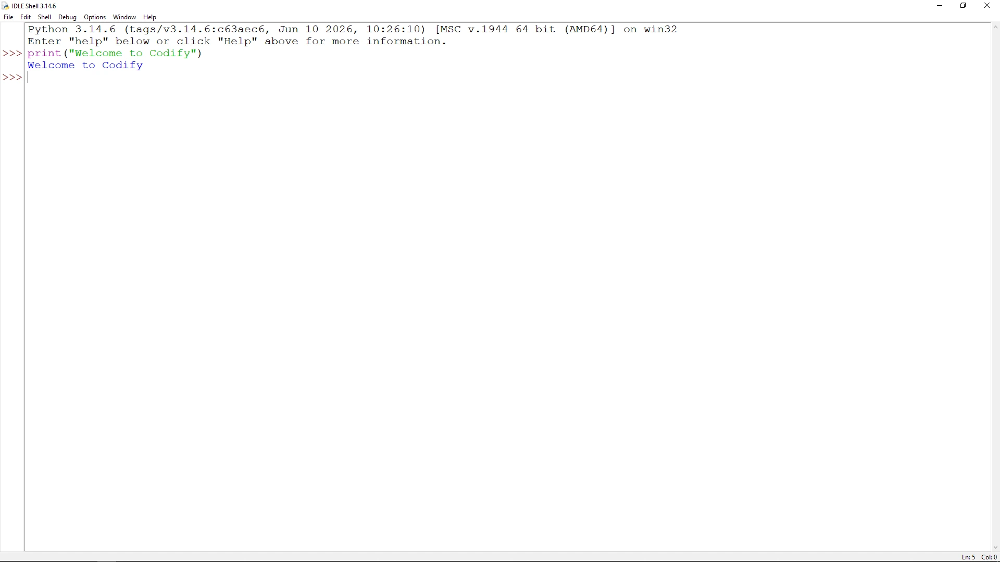

1.4 Python IDLE – Your First Coding Playground
Welcome back to Codify's Masterclass Notes! Up to this point, you have learned about Python’s history, its incredible features, and where it is used in the real world. Now, it is time to actually look at the tool where you will write your very first lines of Python code: IDLE.
When you download and install Python from the official website, you don’t just get a programming language; you also get a neat little software package called IDLE. Let’s unbox this tool completely, look at every button and menu, explore its hidden shortcuts, and understand how to use it like a pro.
1. What Exactly is Python IDLE?
IDLE stands for Integrated Development and Learning Environment. Think of it as a specialized text editor designed specifically for writing and running Python code.
The Secret Wordplay Behind the Name
As you know from Topic 1.1, the creator of Python, Guido van Rossum, named the language after the British comedy show Monty Python’s Flying Circus. Continuing with this inside joke, the name IDLE was chosen as a tribute to Eric Idle, one of the founding members and lead actors of the Monty Python comedy troupe!
2. The Two Faces of IDLE: Shell Mode vs. Script Mode
When you open IDLE, it can work in two completely different ways. Understanding the difference between these two modes is the single most important concept for a beginner.
Mode A: The Interactive Shell (Interactive Mode)
When you first launch IDLE, the very first window that pops up is the Python Shell. You will know you are in the Shell because you will see three right-pointing arrows (>>>). This is called the Python Prompt.

The Shell works on a principle called REPL (Read-Eval-Print Loop):
- Read: It reads the single line of code you type.
- Eval: It evaluates (executes) that line immediately when you hit Enter.
- Print: It prints the result on the screen right away.
- Loop: It loops back and waits for your next line of code.
Interactive Mode Example: If you type a math problem next to the prompt and press Enter, it solves it instantly:
- Best For: Quick experiments, testing out a single line of code, or using Python as a calculator.
- The Catch: The Shell is like an Etch-a-Sketch. The moment you close the window, all your code is lost forever. You cannot save a file in Interactive Mode.
Mode B: The File Editor (Script Mode)
What if you want to write a program that is 50 lines long, save it to your hard drive, send it to a friend, or work on it tomorrow? For that, you need Script Mode.
To enter Script Mode, open IDLE and click File -> New File (or press Ctrl + N). A completely blank window will open. Notice that this window does not have the >>> prompt.
Script Mode Example: In this window, you can write multiple lines of code all at once:
To run this code, you must:
- Save the file by clicking File -> Save (or Ctrl + S) and name it something like
my_program.py. (Every Python file must end with the.pyextension). - Run the program by clicking Run -> Run Module in the menu bar, or simply by pressing the F5 key on your keyboard.
Once you press F5, IDLE will automatically switch back to the Shell window to show you the output of your code!
3. Power Features of IDLE (Why it’s great for beginners)
IDLE might look simple, but it is packed with helpful features that make coding less frustrating:
Syntax Highlighting
IDLE automatically colors your code. Functions turn purple, strings turn green, comments turn red, and keywords turn orange. If text doesn't change color, you probably made a spelling mistake!
Smart Indentation
As you learned in Topic 1.2, Python relies on indentation spaces. When you type an indented block (like an if statement) and press Enter, IDLE automatically indents the next line by 4 spaces.
Auto-Completion
If you start typing a long Python keyword or function and forget how to spell it, press the Tab key. IDLE will show a dropdown menu list of matching words to complete it.
Call Tips
When you type the opening parenthesis ( of a function, IDLE displays a small popup hint showing you exactly what inputs that function expects.
4. Secret IDLE Keyboard Shortcuts Every Student Needs
Using your mouse slows you down. If you want to impress your friends and speed up your coding tasks, memorize these hidden IDLE shortcuts:
5. The Internal Magic: The Built-in Debugger
What happens when your program runs but gives you the wrong answer? You have a "logical bug." IDLE includes a built-in tool called a Debugger to help you catch it.
By clicking Debug -> Debugger in the Shell menu, you unlock a control panel that lets you:
- Pause your code at any specific line.
- Step through your program one single line at a time to watch it execute in slow motion.
- Monitor a list of variables to see exactly how their values change in real time.
6. The Quick Comparison: Shell Mode vs. Script Mode
Let's summarize the two modes side-by-side so you never get confused:
| Feature Dimension | Interactive Shell Mode | Script File Editor Mode |
|---|---|---|
| Visual Cue | Look for the >>> prompt. |
Looks like a blank notepad document. |
| Execution | Code runs immediately, line-by-line. | The entire file runs all at once. |
| Saving Option | Cannot be saved. Lost when closed. | Saved as a .py file to your drive. |
| Primary Use Case | Testing snippets and math problems. | Building large projects and applications. |
| Execution Key | Enter key. | F5 key. |
7. Codify Comprehensive Summary Table
| Core Aspect of IDLE | Functional Definition | Student Takeaway Hint |
|---|---|---|
| The Acronym | Integrated Development and Learning Environment. | Built explicitly for learning Python cleanly. |
| The Bundle | Comes pre-packaged with Python installers. | No extra downloads or configurations required. |
| Syntax Colors | Automated visual coloring system. | Green means text, purple means function. |
| The Extension | .py file naming protocol. |
Scripts must end in .py to run via F5. |
| The REPL Loop | Read, Evaluate, Print, Loop. | The underlying cycle engine powering the Shell. |
8. Codify Deep-Dive Quiz 🧠
Let's test your knowledge on Python IDLE!
IDLE Mastered! 🚀
You are now ready to start coding your first Python projects!
Finished this topic?
Marking this topic as finished updates your course completion matrix.